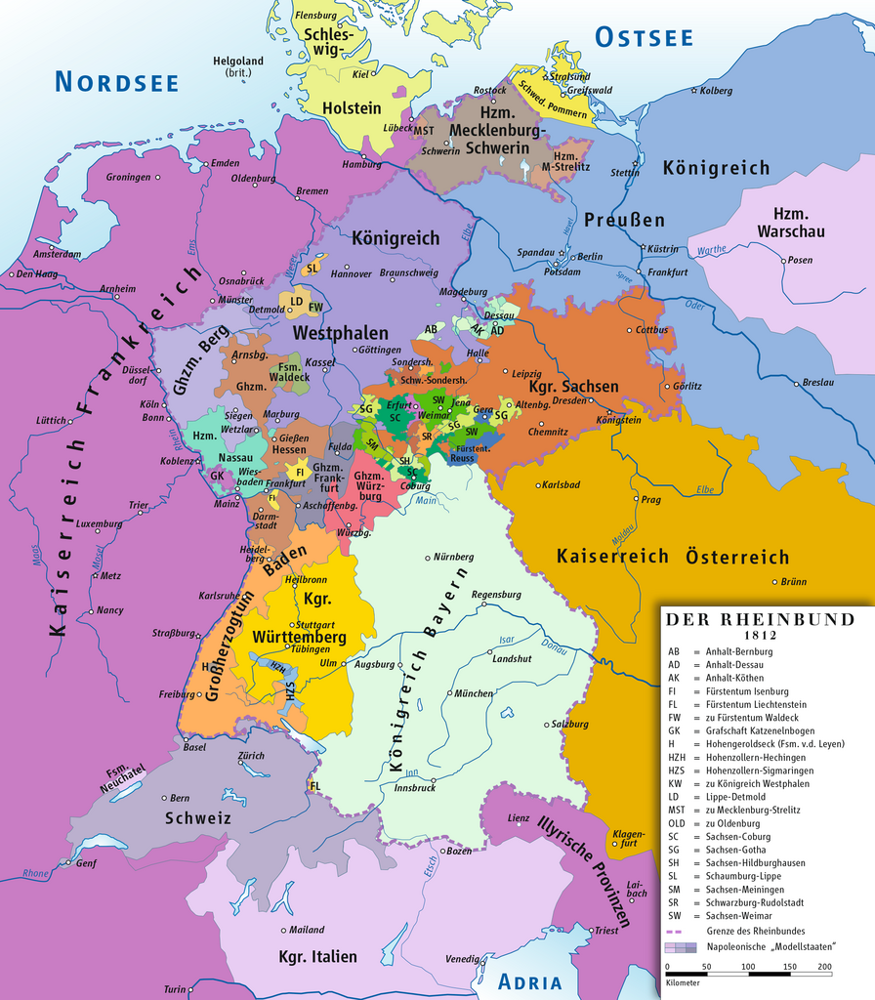
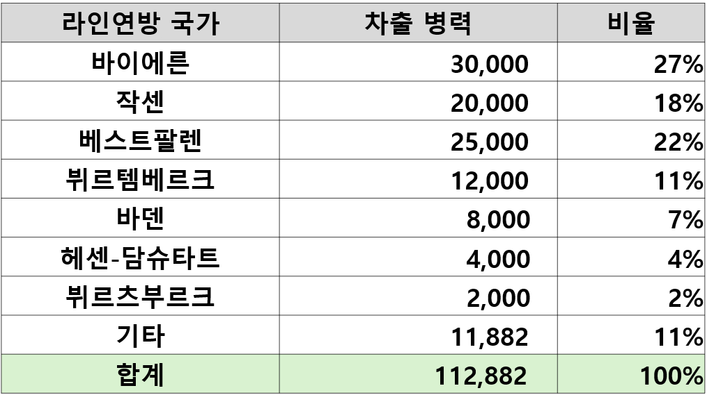
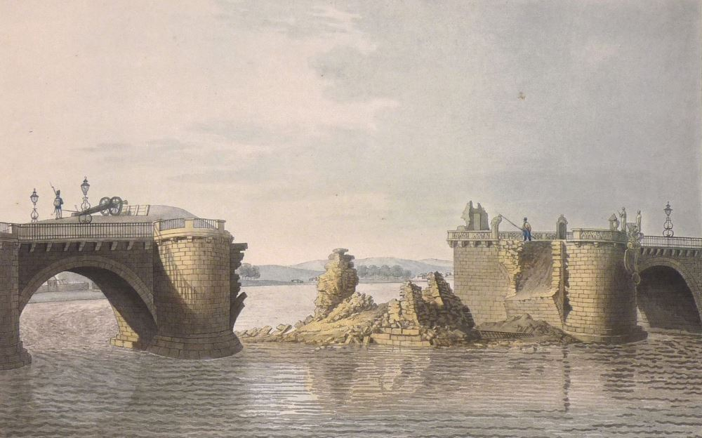
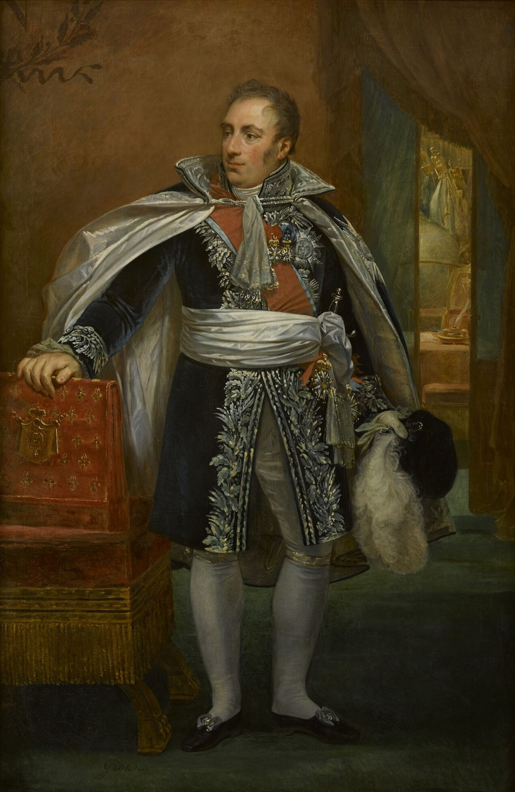

덴너비츠 전투 에필로그 - 흔들리는 라인연방
게시: 2024-08-05T06:30:30+09:00
덴너비츠 전투는 나폴레옹 전쟁사에서 그다지 잘 다루어지지 않는 전투이긴 합니다만, 의외로 이 전투는 그 의미가 큰 사건이었습니다. 이 전투가 일어나게 된 원인부터 그 전투 내용, 그리고 그 결과가 가져온 여파 등 모든 면에서 그렇습니다. 먼저, 왜 이 전투가 일어나게 되었는지를 생각해보십시요. 나폴레옹이 격파해야 할 적의 주력부대는 분명히 보헤미아에 있었는데도, 이번에는 이상하게도 베를린에 집착하여 가뜩이나 부족한 병력을 쪼개어 베를린으로 보냈다가 이 사달이 났지요. 그랬던 이유, 즉 오데르 강을 장악하여 러시아군이 스스로 후퇴하게 만든다는 큰 그림에 대해서는 이미 전에 설명드린 바 있으니 넘어가도록 하겠습니다. 하지만 베를린 점령과 오데르 강 장악이 그렇게 중요한 목표라면, 왜 나폴레옹은 전군을 이끌고 그 쪽으로 진군하지 않았을까요? 1813년 춘계작전을 시작하면서도 나폴레옹의 큰 그림은 베를린을 찍고 오데르 강을 장악한다는 것이었습니다. 그런데도 나폴레옹이 처음부터 주력 부대를 이끌고 베를린으로 쳐들어가지 않고 굳이 드레스덴으로 왔던 것에는 이유가 있었습니다. 바로 드레스덴이 작센의 수도였고, 작센이 연합군 주력이 공격한 첫번째 라인연방 국가라는 것이 그 이유였습니다. 그러니까 나폴레옹이 그의 제국을 유지하려면 라인연방(Rheinbund), 즉 프로이센과 오스트리아를 제외한 독일 소국들에 대한 통제권을 쥐고 있어야 했고, 작센이 그 통제권 유지를 위한 첫번째 관문이었던 것입니다.

(1812년 라인연방의 지도입니다. 작센은 프로이센령 슐레지엔 및 오스트리아와 국경을 맞댄, 라인연방의 최전방 국가라고 할 수 있었습니다.) 나폴레옹이 큰 그림을 변경해가면서까지 굳이 드레스덴을 탈환해야 할 이유가 있었을까요? 나폴레옹은 언제나 도시나 요새가 아닌 적의 주력부대 격파를 목표로 했습니다. 연합군의 핵심은 러시아였고, 오데르 강을 장악하여 러시아군이 스스로 폴란드로 후퇴한다면 드레스덴이 누구 손에 있는지는 중요하지 않았습니다. 나폴레옹 본인의 말대로, 전투에서 승리하면 작은 문제들은 모두 스스로 해결되기 마련이었으니까요. 하지만 드레스덴을 잃을 경우 베를린 점령이 불가능하다면 이야기가 달라지게 됩니다. 원래 나폴레옹의 그랑다르메는 프랑스군이 주축이 된 군대였고 이탈리아군과 폴란드군이 약간 참가한 군대였습니다. 그러다 1806년 라인연방이 결성되면서부터 독일군의 비중이 높아지기 시작합니다. 1805년 아우스테를리츠 전투 직전만 하더라도 그랑다르메 내의 비(非)프랑스군의 비중은 15% 정도였습니다. 그러다 1809년 바그람 전투 때에는 그랑다르메의 28%가 외국군으로 구성되었고, 1812년 러시아 원정때는 무려 48% 정도가 외국군이었습니다. 그 중에서도 독일어를 쓰는 병사들의 비중은 전체 외국군 중 절반에 달했습니다. 이미 폴란드를 잃은 상태였던 1813년, 라인연방까지 잃는다면 나폴레옹의 그랑다르메는 도저히 유지될 수 없었습니다. 가령 당시 덴너비츠 전투에 참전한 베를린 방면군은 프랑스 4개 사단과 함께 작센 2개 사단, 바이에른과 뷔르템베르크 1개 사단씩, 그리고 이탈리아 1개 사단으로 구성되어 프랑스군보다 외국군이 더 많았습니다.

(라인연방에서 나폴레옹의 1812년 그랑다르메에게 차출 당했던 병력수입니다. '기타' 중에는 리히텐슈타인(Liechtenstein) 공국의 40명이 포함되어 있습니다. 리히텐슈타인 공국의 40명이 실제로 러시아를 침공한 부대에 소속되었는지는 모르겠네요.) 그런데 라인연방 중에서도 어쩌다 작센이 1813년 전투의 최전선에 서게 되었을까요? 작센이 아니라 원래 프로이센의 일부였던 북부 독일의 메클렌부르크-슈베린(Mecklenburg-Schwerin) 공국이나 베스트팔렌(Westpalen) 왕국이 최전선이 되는 것이 맞을 것 같은데요. 이는 전에도 자세히 설명드린 바 있습니다만, 프로이센은 처음부터 남부의 슐레지엔을 국왕 프리드리히 빌헬름의 피난처로 정해놓고 거기로 군 병력과 정부를 옮겨 놓은 뒤 나폴레옹에 대한 항전을 선포했기 때문이었습니다. 그래서 러시아군은 슐레지엔에서 프로이센군과 합류했고, 그들의 공세는 자연스럽게 작센을 향하게 된 것이었습니다. 만약 수도와 영토 대부분을 점령당한 작센이 '어쩔 수 없다'라는 핑계로 라인연방을 이탈하게 된다면 다른 라인연방 국가들도 도미노처럼 이탈할 가능성이 컸습니다. 라인연방 국가들 중 대부분은 나폴레옹의 힘에 굴복하여 라인연방에 가입했던 것이지 결코 나폴레옹의 대의를 자발적으로 따른 것이 아니기 때문이었습니다. 나폴레옹이 라인연방을 만들며 내세운 명분은 그동안 독일 소국들을 위협하던 두 패권 국가인 프로이센과 오스트리아로부터 그들을 지켜주겠다는 것이었고, 그건 실제로 일부 사실이었지만, 실은 그 독일 소국들로부터 병력과 돈을 짜내기 위한 것이었습니다. 특히 1812년 러시아 원정은 라인연방 국가들의 큰 불만을 샀는데, 그 원정이 참담한 실패로 끝난 것도 모자라 그 뒤를 이어 발발한 제6차 대불동맹전쟁에도 병력과 돈을 내놓으라고 닥달하는 나폴레옹의 요구는 그런 불만을 점점 더 키울 뿐이었습니다. 그 중에서도 당장 수도 드레스덴을 점령당한 작센은 흔들리는 것이 두드러지게 눈에 띄었습니다. 전에 언급했지만, 엘베강을 건너는 아우구스투스 다리(Augustusbrucke)를 보존해달라는 부탁에도 불구하고 1813년 3월 18일 드레스덴에서 철수하는 다부 원수에 의해 이 다리가 폭파되어버리자, 작센 국왕 프리드리히 아우구스투스는 아예 피난처를 오스트리아의 프라하로 옮겨 버렸고 작센군은 프랑스군이 토르가우(Torgau) 요새에 입성하는 것을 거부하는 사태까지 벌어졌습니다. 1813년 봄, 이런 상황 때문에 나폴레옹은 20만 대군을 이끌고 베를린이 아니라 드레스덴으로 향했던 것입니다.

(1813년 3월, 다부가 폭파하고난 뒤의 드레스덴 아우구스투스 다리입니다. 기록에 2개의 아치와 1개의 교각(pier)가 날아갔다고 되어 있습니다. 이 다리 폭파는 군사적으로 별다른 영향을 주지 못했습니다. 러시아-프로이센 연합군은 부교를 놓고 쉽게 강을 건너 드레스덴에 무혈입성했습니다.) 작센 민심도 좋지 못했습니다. 처음에는 전통적인 나쁜 이웃 프로이센군과 말만 들어도 혐오스러운 러시아군이 쳐들어온다는 소리에 대영웅 나폴레옹의 보호를 바라기도 했지만, 나폴레옹의 대부대가 드레스덴과 그 일대에 자리를 잡고 몇 주가 지나자 주민들의 태도가 바뀌기 시작했습니다. 손님 대접도 며칠이지, 대부대가 퍼질러 앉아 주변의 식량을 싹싹 긁어먹자 당장 주민들의 삶이 고달파졌기 때문이었습니다. 1813년 9월 13일 나폴레옹이 작센 일대의 군 보급 상황에 대해 다뤼(Pierre Antoine Noël Bruno, Comte de Daru)에게 보낸 편지를 보면 이런 구절이 있습니다. "우리 군은 이미 굶고 있소. 이걸 다른 관점으로 묘사하는 것은 그저 자기 기만일 뿐이오."
현지조달의 귀재로서 황량한 러시아 벌판에서도 어떻게든 먹을 것을 찾아내던 나폴레옹의 군대가 굶고 있다면 작센 주민들의 상황은 더 나빴을 것입니다. 이것도 나폴레옹이 잘 나가던 시절에는 없던 일이었습니다. 나폴레옹은 언제나 기동전을 펼쳤고, 따라서 대부분의 경우 한 자리에 오래 머무는 법이 없었습니다. 그런데 연합군에 의해 남-북-동쪽을 둘러싸인 채 돌파구를 마련하지 못하고 드레스덴 주변에 오래 머물게 되자, 현지 조달을 중시하는 프랑스군의 특성상 그 일대의 식량이 동이 날 수 밖에 없었습니다.

(다뤼의 초상화입니다. 다뤼는 나폴레옹보다 2살 연상이었는데, 원래 귀족 출신으로서 나폴레옹처럼 사관학교에서 정규 교육을 받은 제대로 된 지식인이자 신사였습니다. 그런 출신 배경 때문에 로베스피에르의 공포 정치 때는 왕당파라고 오해받아 투옥되기도 했었습니다. 나폴레옹은 자신과 비슷한 귀족 출신의 교양과 실무능력을 갖춘 인물을 유난히 좋아했는데, 다뤼도 예외가 아니어서 나폴레옹의 총애를 받았습니다. 그는 군 지휘관으로서보다는 외교 및 행정 쪽으로 중용되었는데, 가령 나폴레옹이 괴테와 만날 때도 나폴레옹은 다뤼를 데리고 만났다고 합니다.)
이런 상황에 대한 흥미로운 일화도 하나 있습니다. 당시 드레스덴에 주둔하고 있던 근위포병대의 노엘(Jean-Nicolas-Auguste Noël) 대령은 다뤼 장군으로부터 'XX에 가면 이럴 때를 대비하여 식량을 비축해놓은 보급창이 있으니 거기서 식량을 실어오라'는 명령을 받습니다. 그러나 부하들을 이끌고 그 곳에 가보니 그런 보급창은 흔적도 찾을 수 없었습니다. 그 일대를 샅샅이 뒤지고 현지 주민들에게 물어봐도, 그런 보급창을 처음부터 존재하지 않았던 것이 분명했습니다. 돌아와 다뤼에게 그렇게 보고하니, 다뤼는 '서류에 따르면 분명히 보급창이 있는데 없다는 것은 말이 안된다, 혹시 노엘 대령 자네가 뭔가 빼돌린 것 아니냐?'라고 힐난했습니다. 여러분도 대충 짐작하시듯이, 1813년 봄에 나폴레옹이 번갯불에 콩 볶아 먹듯이 전쟁 준비를 할 때 프랑스 뿐만 아니라 라인연방 국가들을 정말 달달 볶고 온갖 자원을 다 쥐어 짰는데, 그 와중에 준비 완료되었다고 보고된 보급 물자들이 다 서류상으로만 존재하는 것이었던 것입니다. 다년간의 대륙봉쇄령과 러시아 원정 준비로 이미 가난해진 라인연방 국가들에게 더 이상 짜낼 여력이 없었던 것이지요. 이런 상황 때문에, 덴너비츠 전투에서 패배한 베를린 방면군은 필요 이상으로 많은 병력을 상실했습니다. 전투에서 발생한 사상자는 그저 그랬지만, 그 이후에 벌어진 후퇴에서 지나치게 많은 병사들이 포로로 잡히거나 행방불명 되거나 아예 프로이센군으로 귀순했기 때문입니다. 이는 막도날의 보버 방면군이 당한 카츠바흐 전투 패배에서도 동일하게 발생한 일이었습니다. 전체 병력의 절반 가까이를 이루고 있던 독일계 병사들이 대거 이탈했던 것입니다. 그러는 와중에 진짜 사달이 벌어진 곳은 작센이 아니라 엉뚱한 곳이었습니다. 이는 나폴레옹도 짐작하지 못한 타격이었습니다. Source : The Life of Napoleon Bonaparte, by William Milligan Sloane Napoleon and the Struggle for Germany, by Leggiere, Michael V With Napoleon's Guns by Colonel Jean-Nicolas-Auguste Noël https://en.wikipedia.org/wiki/Confederation_of_the_Rhine https://www.cambridge.org/core/books/abs/cambridge-history-of-the-napoleonic-wars/napoleons-grande-armee/BA2410C86533CB4F13B8DD98FAC4E903 https://en.wikipedia.org/wiki/Pierre_Daru